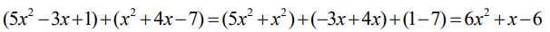
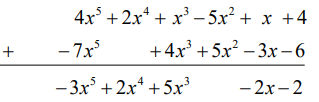

1. Suma de polinomios
La suma de dos polinomios es otro polinomio. A la hora de sumar dos polinomios procederemos a sumar los monomios de igual parte literal o monomios semejantes.
La suma de polinomios se puede hacer de dos formas distintas: en horizontal y en vertical. Vamos a ver las dos maneras y después puedes elegir cuál te resulta más fácil utilizar.
Suma horizontal
Para hacer la operación en horizontal:
- Primero escribimos un polinomio y seguido en la misma línea escribimos el otro que vamos a sumar.
- Después, agrupamos los términos semejantes y los sumamos.
Ejemplo:

Suma vertical
Para hacer las sumas en vertical debemos:
- Escribir el primer polinomio ordenado. En el caso de que sea incompleto es conveniente dejar los huecos libres de los términos que falten.
- Después escribimos el siguiente debajo del anterior, de manera que coincida justo debajo el término semejante al de arriba.
- Ya podemos sumar cada columna.
Ejemplo:
